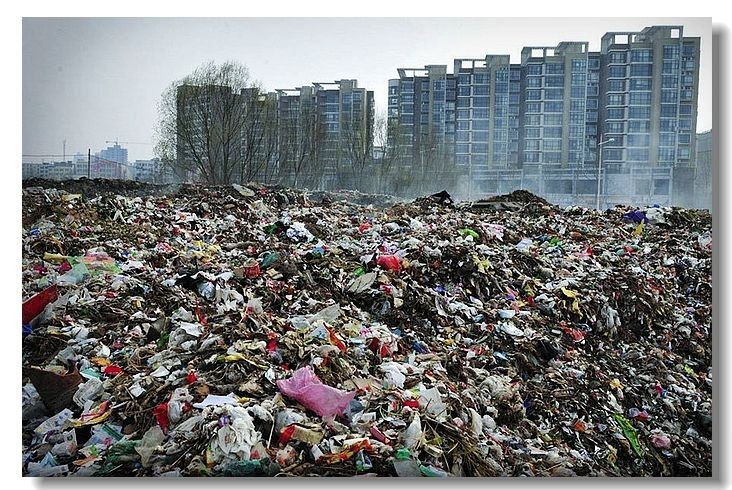
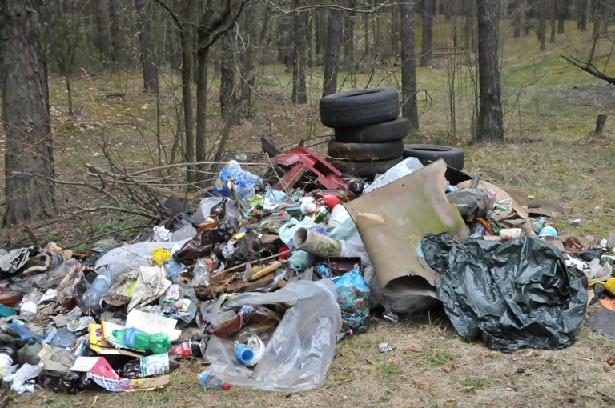

Загрязнение земли
Мусор может загрязнять землю, если он не правильно утилизирован. Пластик, стекло и металлические отходы могут затемнить почву и вредить ее качеству. Кроме того, опасные химические вещества из отходов могут попадать в почву и негативно влиять на растения, животных и людей.

Деградация почвы
Мусорные свалки и неправильное обращение с отходами могут привести к деградации почвы. Это может привести к снижению плодородия земли, ухудшению качества почвы для сельского хозяйства и проблемам с водообеспечением.

Протекание мусорной свалки
Мусорные свалки могут протекать, выделая так называемый "фильтрат свалки" или "сливные воды свалки". Эти жидкости могут содержать токсичные вещества, которые загрязняют почву и грунтовые воды, угрожая здоровью людей и окружающей среде.